一、LAMP介绍
LAM(M)P是一组Web应用软件的组合，Linux+Apache+Mysql/MariaDB+Perl/PHP/Python一组
常用来搭建动态网站或者服务器的开源软件，所有组成产品均是开源软件，本身都是各自
独立的程序，但是因为常被放在一起使用，拥有了越来越高的兼容度，共同组成了一个强
大的Web应用程序平台。
L：Linux
A：Apache (httpd)
M：Mysql, Mariadb
M：Memcached
P：PHP, Perl, Python
WEB资源类型：
静态资源：原始形式与响应内容一致，在客户端浏览器执行
动态资源：原始形式通常为程序文件，需要在服务器端执行之后，将执行结果返回给客户端
Web相关语言
客户端技术： html，javascript
服务器端技术：php, jsp，python，asp
LAMP工作原理：
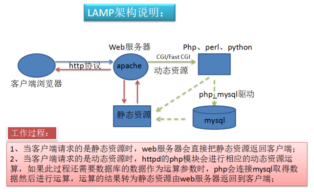
二、实例：LAMP搭建PhpMyAdmin
实验环境：
Linux： CentOS 7.4
Apache： httpd-2.4.6
MariaDB：mariadb-server-5.5.56
Php，php-mysql：php-5.4.16
具体步骤：
1 下载phpMyAdmin 4.0.10.20
注：此版本支持PHP 5.2 和 MySQL 5之前，不支持 PHP 5.5 更新的版本
1 | wget https://files.phpmyadmin.net/phpMyAdmin/4.0.10.20/phpMyAdmin-4.0.10.20-all-languages.tar.xz |
2 解压到httpd目录下
1 | tar xvf phpMyAdmin-4.0.10.20-all-languages.tar.xz -C /var/www/html/ |
统一该目录名称，方便操作
1 | cd /var/www/html/ |
3 复制配置文件，不需要更改内容
1 | cd phpMyAdmin/ |
安装php-mbstring
1 | yum install php-mbstring –y |
4 重启httpd服务
1 | systemctl restart httpd |
5 打开浏览器访问http://192.168.30.10/phpMyAdmin/，出现下图即表示PhpMyAdmin搭建成功
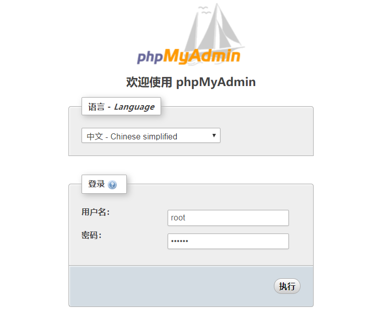
6使用mysql账号进行登录，就可进行数据库的图形化操作了
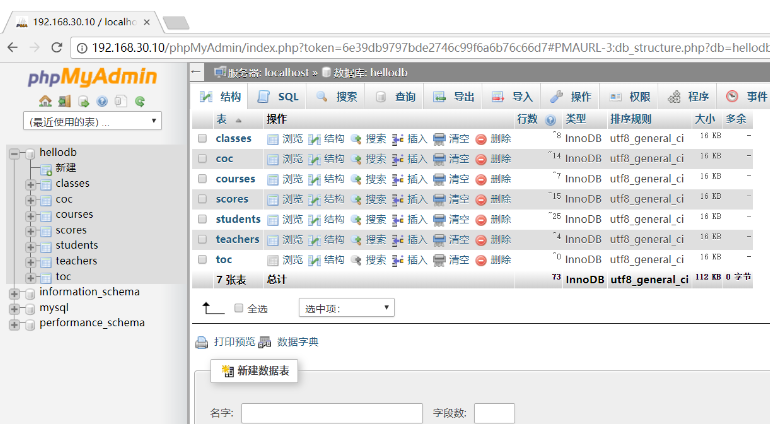
三、实例：CentOS7编译Php-xcache
实验环境：
亚马逊云主机一台，以WordPress搭建了www.wxlinux.com
操作系统版本：CentOS7.5
PHP版本为：5.4.16
Httpd版本为：Apache2.4.6
数据库版本：mariadb-server-5.5.56
安全前我们测试下www.wxlinux.com的每秒请求数，为1.90次/秒
ab -c 10 -n 100 http://www.wxlinux.com/
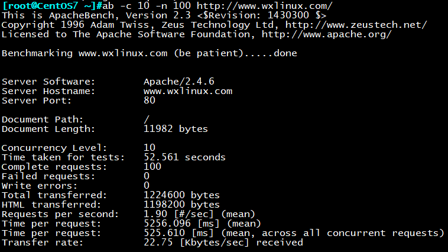
下载最新版本Php-xcache
wget https://xcache.lighttpd.net/pub/Releases/3.2.0/xcache-3.2.0.tar.gz
解压包到/data目录下
tar xvf xcache-3.2.0.tar.gz -C /data
cd xcache-3.2.0
此时xcache目录下是没有configure文件的，我们需要使用phpize命令生成它
安装php-devlop包
yum install php-devlop
yum install gcc
生成编译环境
phpize
查看下php-config文件位置
[root@wxlinux ~]#which php-config
/bin/php-config
编译安装
./configure –enable-xcache –with-php-config=/bin/php-config
make && make install
cp xcache-3.2.0/xcache.ini /etc/php.d/
重启http服务使其生效
systemctl restart httpd.service
再次进行测试，每秒请求数提升到3.95
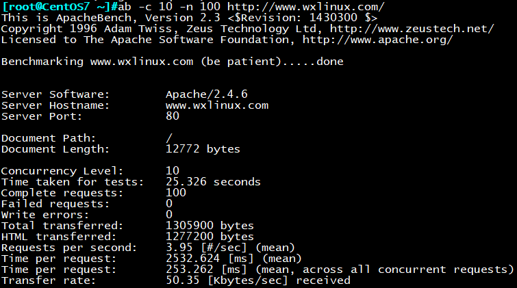
四、实例：LAMP搭建wordpress
前期准备：
操作系统版本：CentOS7.5
PHP版本为：5.4.16
Httpd版本为：Apache2.4.6
数据库版本：mariadb-server-5.5.56
配置环境：
1 | yum -y install httpd php mariadb-server php-mysql |
启动相应服务
1 | systemctl start httpd mariadb |
为数据库设置root账号密码
1 | mysqladmin -u root password “XXXXXXXX” |
创建一个名为wordpress的数据库
1 | mysql> create database wordpress; |
下载wordpress
wget http://wordpress.org/latest.tar.gz
解压安装包
tar –zxf latest.tar.gz -C /var/www/html
注意wordpress目录权限
setfacl -R -m u:apache:rwx /var/www/html/wordpress
重启httpd服务
systemctl restart httpd
浏览器打开：http://192.168.30.10/wordpress
简单的进行一些配置，即可完成wordpress的搭建
![DLH}ZHW]GR6Q_QTE3DQSU2
五、实验：centos7上源码编译安装LAMP的多虚拟主机wordpress，discuz
前期准备：
虚拟机两台
LAMP server： CentOS 7.5，完全干净的系统环境 IP：192.168.30.17
Client： CentOS7.4 IP：192.168.30.10
准备以下安装包
apr-1.6.3.tar.gz
apr-util-1.6.1.tar.gz
httpd-2.4.33.tar.bz2
mariadb-10.2.15-linux-x86_64.tar.gz
php-7.1.18.tar.bz2
wordpress-4.9.4-zh_CN.tar.gz
Discuz_X3.3_SC_UTF8.zip
1.编译安装httpd
tar xvf httpd-2.4.33.tar.bz2
tar xvf apr-1.6.3.tar.gz
tar xvf apr-util-1.6.1.tar.gz
cp -av apr-util-1.6.1 httpd-2.4.33/srclib/apr-util
cp -av apr-1.6.3 httpd-2.4.33/srclib/apr
./configure –prefix=/app/httpd24 \
–enable-so \
–enable-ssl \
–enable-cgi \
–enable-rewrite \
–with-zlib \
–with-pcre \
–with-included-apr \
–enable-modules=most \
–enable-mpms-shared=all \
–with-mpm=prefork
make && make install
echo PATH=/app/httpd24/bin:$PATH > /etc/profile.d/lamp.sh
. /etc/profile.d/lamp.sh
开启httpd服务
apachectl
2.二进制安装mariadb
tar xvf mariadb-10.2.15-linux-x86_64.tar.gz -C /usr/local/
cd /usr/local/
ln -s mariadb-10.2.15-linux-x86_64/ mysql
useradd -r -s /sbin/nologin mysql
chown -R mysql.mysql mysql/
mkdir /data/mysql -pv
chown mysql.mysql /data/mysql/
vim /etc/profile.d/lamp.sh
PATH=/appl/httpd24/bin:/usr/local/mysql/bin:/usr/local/sbin:/usr/local/bin:/usr/sbin:/usr/bin:/root/bin
. /etc/profile.d/lamp.sh
cd mysql/
./scripts/mysql_install_db –datadir=/data/mysql –user=mysql
vim /etc/my.cnf
datadir=/data/mysql
chkconfig –add mysqld
chkconfig –list
service mysqld start
ss -ntl
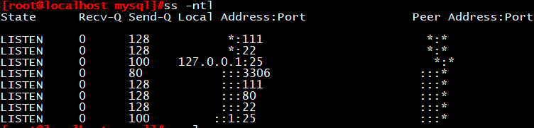
创建wordpress数据库，和管理用户
MariaDB [(none)]> create database wordpress;
MariaDB [(none)]> grant all on wordpress.* to wpuser@’192.168.30.%’ identified by ‘centos’;
3.编译安装fastcgi模式的php
tar xvf php-7.1.18.tar.bz2
cd php-7.1.18/
./configure –prefix=/app/php \
–enable-mysqlnd \
–with-mysqli=mysqlnd \
–with-openssl \
–with-pdo-mysql=mysqlnd \
–enable-mbstring \
–with-freetype-dir \
–with-jpeg-dir \
–with-png-dir \
–with-zlib \
–with-libxml-dir=/usr \
–enable-xml \
–enable-sockets \
–enable-fpm \
–with-config-file-path=/etc \
–with-config-file-scan-dir=/etc/php.d \
–enable-maintainer-zts \
–disable-fileinfo
make && make install
cd /root/srcs/php-7.1.18/
cp php.ini-production /etc/php.ini
cp sapi/fpm/init.d.php-fpm /etc/init.d/php-fpm
chmod +x /etc/init.d/php-fpm
chkconfig –add php-fpm
chkconfig php-fpm on
cd /app/php/etc
cp php-fpm.conf.default php-fpm.conf
cp php-fpm.d/www.conf.default php-fpm.d/www.conf
service php-fpm start
ss -ntl
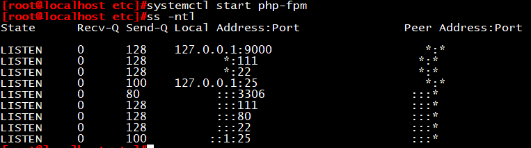
vim /etc/profile.d/lamp.sh
PATH=/app/php/bin:/app/php/sbin:/app/httpd24/bin:/usr/local/mysql/bin:/usr/local/sbin:/usr/local/bin:/usr/sbin:/usr/bin:/root/bin
. /etc/profile.d/lamp.sh
vim /app/httpd24/conf/httpd.conf
取消下面两行的注释，启用代理功能
LoadModule proxy_module modules/mod_proxy.so
LoadModule proxy_fcgi_module modules/mod_proxy_fcgi.so
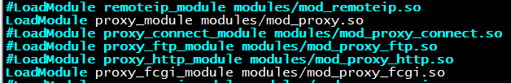
修改下面行
DirectoryIndex index.php index.html
addType application/x-httpd-php .php
AddType application/x-httpd-php-source .phps
ProxyRequests Off
ProxyPassMatch ^/(.*.php)$ fcgi://127.0.0.1:9000/app/httpd24/htdocs/$1
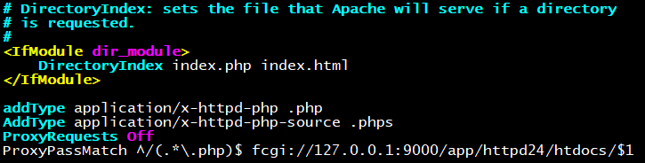
重启httpd服务
apache restart
4.安装wordpress
解压安装包
tar –zxf – wordpress-4.9.4-zh_CN.tar.gz -C /app/httpd24/htdocs/blog
注意wordpress目录权限
setfacl -R -m u:apache:rwx /var/www/html/wordpress
重启httpd服务
systemctl restart httpd
5.安装Discuz
mv Discuz_X3.3_SC_UTF8.zip /app/httpd24/htdocs/bbs/
cd /app/httpd24/htdocs/bbs/
unzip mv Discuz_X3.3_SC_UTF8.zip
配置虚拟主机
修改配置文件，开启虚拟主机配置目录
vim httpd-vhosts.conf
# Virtual hosts
Include conf/extra/httpd-vhosts.conf 找到此行，去掉注释
6.配置虚拟主机
vim /app/httpd24/conf/extra/httpd-vhosts.conf
servername www.blog.com
documentroot /app/httpd24/htdocs/blog/wordpress
DirectoryIndex index.php
ProxyRequests Off
ProxyPassMatch ^/(.*.php)$ fcgi://127.0.0.1:9000/app/httpd24/htdocs/blog/wordpress/$1
servername www.bbs.com
documentroot /app/httpd24/htdocs/bbs
DirectoryIndex index.php
ProxyRequests Off
ProxyPassMatch ^/(.*.php)$ fcgi://127.0.0.1:9000/app/httpd24/htdocs/bbs/$1
7.测试：
此时切换到另外一台主机访问www.blog.com及www.bbs.com
为了方便实现，这里修改hosts文件模拟DNS
加入此行：
vim /etc/hosts
192.168.30.17 www.blog.com www.bbs.com
切换到图形界面，打开firefox浏览器直接输入www.blog.com，直接转向了wordpress的安装页面
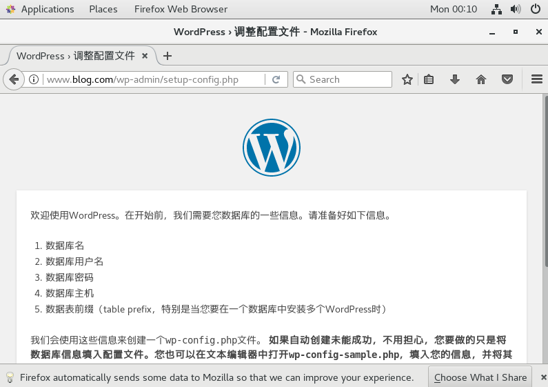
输入www.bbs.com，则直接转向了wordpress的安装页面
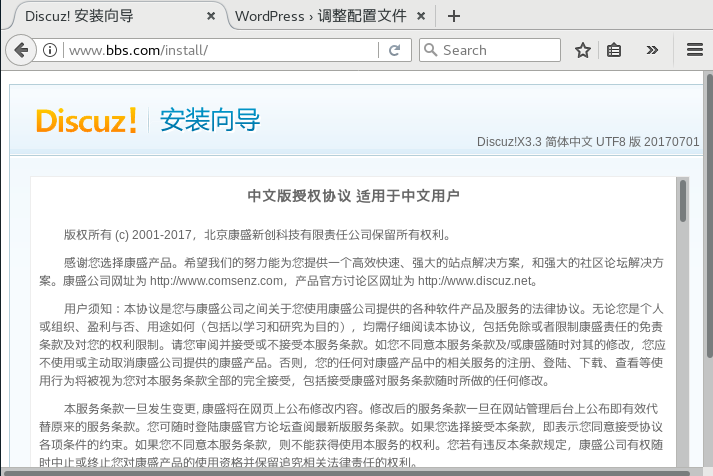
至此，我们完成了编译LAPM，基于主机头的wordpress和Discuz的安装！